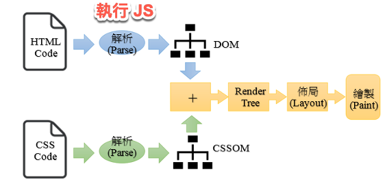
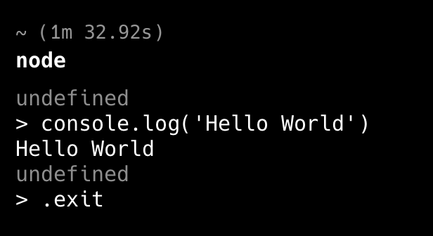
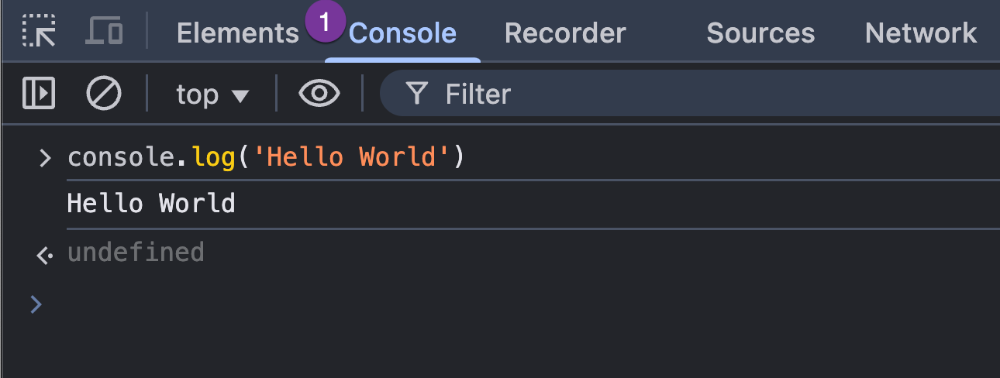
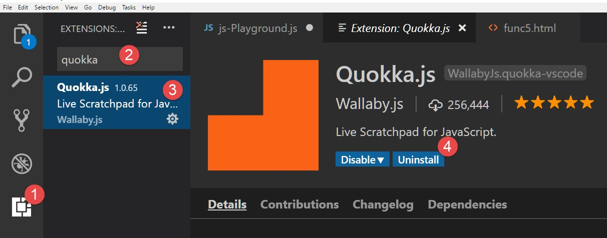
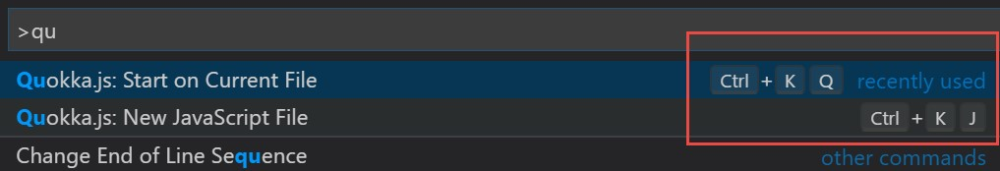
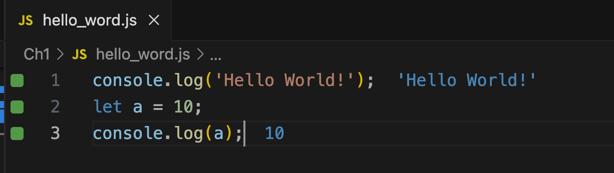

Ch1 認識 JavaScript
JavaScript 特色與用途
特色
- 直譯式 (Interpret) 的描述語言
- 跨平台、物件導向、輕量
- 主要應用於 Web 開發, 製作動態網頁
- 也可用於後端開發 (Node.js)
- 採用 ECMAScript 標準 (如 ES5、ES6、ES9)
用途
- 操作 HTML DOM
- 開發網頁遊戲
- HTML5 前端資料儲存
- Node.js 後端開發
設置 JavaScript 開發環境
JavaScript 運行環境
- 瀏覽器：在 Browser 中執行(用戶端)
- Node.js：讓 JavaScript 也能在後端 (伺服器端) 執行
核心組成
- ECMAScript：定義語法、流程控制、物件、函數、錯誤處理
- DOM API：操作網頁文件結構與內容、事件處理
- WEB API：操作瀏覽器功能, 如網路請求、計時器、地理位置、用戶端儲存
JavaScript 在用戶端執行
- HTML 與 CSS 交給渲染引擎處理
- HTML 解析並建構 DOM 樹
- CSS 解析並建構 CSSOM 樹
- 組合成渲染樹 (Render Tree)
- 透過 Layout() 方法安排版面
- Paint() 方法繪製網頁

JavaScript 在後端執行
- Node.js 採用 Google V8 引擎
- 官方網站: Node.js
- LTS (Long Term Support) 版本較穩定
- 提供 REPL 交互式開發環境
- REPL: Read-Eval-Print Loop
REPL 交互式開發環境
- 在 CMD 輸入
node進入 REPL - 輸入
console.log("Hello World") - 退出方式：
Ctrl+D- 輸入
.exit

瀏覽器主控台 Console
- 在用戶端執行 JavaScript, 不需要安裝 Node.js
- 瀏覽器開發工具
Console - 可用於 Debug 與測試 JavaScript
- 開啟方式:
- Chrome:
F12開啟 DevTools console.log("測試輸出")
- Chrome:

Console 常用方法
基本輸出
- 一般訊息
console.log("一般訊息");
- 錯誤訊息
console.error()
console.error("錯誤訊息");
- 警告訊息
console.warn()
console.warn("警告訊息");
清除輸出
- 清除輸出
console.clear()
console.clear();
設置開發環境
安裝 Node.js、VSCode 和 Quokka.js 插件
Node.js 是一個 JavaScript 運行時，允許您在瀏覽器外運行 JavaScript 代碼。
- 下載並安裝 Node.js
Visual Studio Code (VSCode) 是目前最受歡迎的代碼編輯器之一。
Quokka.js 是一個 VSCode 插件，允許輸入 JavaScript 代碼時立即查看結果。
在 VSCode 中安裝 Quokka.js 擴展
在 VSCode Extensions 中搜索 Quokka.js 並安裝它
使用 Quokka 查看執行結果
Quokka 快捷鍵：
- Cmd/Ctrl+K,Q：在現有文件上啟動/重啟 Quokka。
- Cmd/Ctrl+K,J：打開一個新的 Quokka JavaScript 文件。

啟動 Quokka 以在輸入 JavaScript 代碼時立即查看結果。

console.log 的輸出顯示在該行的右側， 圖中的藍色字。
將 JavaScript 添加到網頁
加入 JavaScript 到 HTML 的三種方式
有三種方式將 JavaScript 添加到網頁：
- 行內(Inline) JavaScript：將 JavaScript 代碼直接添加到 HTML 元素的屬性中。
- 內部（直接）JavaScript：在 HTML 文件中的
<script>標籤內添加 JavaScript 代碼。 - 外部 JavaScript：將 JavaScript 代碼寫在外部木檔案，再將其鏈接到 HTML 文件。
何時使用哪一種方式？（決策思考）
行內 (Inline) JavaScript
適合情境：
- 非常簡單、一次性的事件處理（例如教學初期示範按鈕點擊）。
- 快速測試某個小功能。
<button onclick="alert('Hello World!')">Click me</button>
不建議使用的原因：
- 將 HTML 結構與 JavaScript 行為混在一起，違反「結構與行為分離」原則。
- 不易維護與除錯。
- 不利於團隊合作與程式重用。
內部 (Internal) JavaScript
適合情境：
- 單一頁面的小型專案。
- 範例教學、練習題。
- 需要快速撰寫並測試多行 JavaScript 程式碼。
優點：
- 程式碼集中在同一個 HTML 檔案，方便教學與理解。
- 比 Inline 更清楚區分 HTML 與 JavaScript。
限制：
- 無法在多個頁面之間重用程式碼。
- 當程式變大時，HTML 檔案會變得冗長。
<html>
<head>
<title>Hello World</title>
</head>
<body>
<script>
alert('Hello World!');
</script>
<h1>Hello World</h1>
<p>Welcome to my first web page!</p>
<script>
alert('Hello World! 2');
</script>
</body>
</html>
3️⃣ 外部 (External) JavaScript
適合情境：
- 真實專案開發。
- 多頁面網站。
- 需要模組化與重複使用程式碼。
優點：
- HTML 與 JavaScript 完全分離（結構 vs 行為）。
- 可重用、可維護、可測試。
- 有利於版本控制與團隊開發。
- 瀏覽器可快取 (cache) JS 檔案，提高效能。
可能缺點：
- 需要管理檔案路徑。
- 初學者可能不熟悉專案結構。
<html>
<head>
<title>Hello World</title>
</head>
<body>
<h1>Hello World</h1>
<p>Welcome to my first web page!</p>
<script src="your_script.js"></script>
</body>
</html>
簡單決策原則
| 情境 | 建議方式 |
|---|---|
| 示範單一按鈕事件 | Inline（僅示範） |
| 單頁小練習 | Internal |
| 多頁網站 / 真實專案 | ✅ External |
JavaScript 執行順序
- JavaScript 代碼的執行順序是從上到下。
- 瀏覽器在遇到
<script>標籤時執行 JavaScript 代碼。 alert()是一個函數, 用對話框顯示訊息。- 當頁面載入時，瀏覽器會顯示帶有 “Hello World!” 消息的對話框。
- 然後，它會渲染頁面的 HTML 內容。
- 之後, 會再次顯示帶有 “Hello World! 2” 訊息的對話框。
<!DOCTYPE html>
<html>
<head>
<title>Hello World</title>
</head>
<body>
<script>
alert('Hello World!');
</script>
<h1>Hello World</h1>
<p>Welcome to my first web page!</p>
<script>
alert('Hello World! 2');
</script>
</body>
</html>
控制瀏覽器何時提取和執行 JavaScript 代碼 (進階閱讀)
為何要控制
- JavaScript 代碼執行時會阻止頁面渲染，導致用戶需要等待 JavaScript 加載和執行完成後才能看到頁面內容。
- 如果 JavaScript 代碼很大或網路慢，使用者會一直看到空白頁面，直到 JavaScript 加載完成。
- 這會影響用戶的體驗，增加跳出率。
- 可控制執行時機，使得用戶先看到頁面內容，並在背景加載 JavaScript，優化頁面加載速度和改善用戶體驗。
如何控制
使用 <script> 標籤中的 defer 和 async 屬性來控制瀏覽器何時提取和執行 JavaScript 代碼。

圖中：
- Green: 渲染 HTML（HTML 解析器 parser）
- Red: JavaScript 代碼的抓取 (fetch)
- Blue: 執行 JavaScript 代碼(execution)
控制的方式
<script>: 預設情況下，會阻止頁面的渲染，直到抓取並執行 JavaScript 完成後，再繼續渲染 HTML 內容。
<script defer>：瀏覽器在渲染 HTML 內容時同時抓取 JavaScript 代碼。但它在 HTML 內容渲染完成後再執行 JavaScript code。
- 簡單說，JS 在 HTML 內容渲染完成後才執行。
<script async>：瀏覽器在渲染 HTML 內容時同時抓取 JavaScript 代碼。抓取完成，中斷 HTML 內容渲染，立即執行 JavaScript code (非同步執行), 之後再繼續渲染 HTML 內容。
後立即執行 JavaScript code，之後再繼續解析 HTML 內容。
<script type="module">:
- module 是 ES6 引入的 JavaScript 模組系統，允許開發者將 JavaScript 代碼分割成多個文件，並在需要時進行導入和使用。
- 使用
<script type="module">會一次抓取多個模組，並在所有模組都抓取完成後才執行 JS 代碼。
<script type="module" async>:
- 結合了 module 和 async 的特性，會一次抓取多個模組，並在所有模組都抓取完成後立即執行 JS 代碼。
- 與
<script async>類似，JS 抓取完成後立即執行。
引用外部 JavaScript 文件的細節
使用 <script> 標籤的 src 屬性來鏈接外部 JavaScript 文件到 HTML 文件。
<script type="text/javascript" src="your_script.js"></script>
注意:
- 檔案名稱區分大小寫。
- 指定文件的相對或絕對路徑。
Example:
Lab 1
總結
- JavaScript 可以用於前端 (瀏覽器) 和後端 (Node.js)的程式語言
- 可以在 瀏覽器 Console 中執行 JavaScript 代碼
- 可以在 Node.js REPL 中執行 JavaScript 代碼
- 三種方式將 JavaScript 添加到網頁：內部(internal)、外部(external)、行內(inline)
複習問題
一、觀念理解與比較
- 為什麼在真實專案中通常不建議使用 Inline JavaScript？請從「維護性」與「結構分離」的角度說明。
- Internal JavaScript 與 External JavaScript 在「可重用性」上的差異為何？在什麼情境下這個差異會變得重要？
- 如果一個網站只有單一頁面且功能簡單，你會選擇哪一種方式加入 JavaScript？為什麼？
- 如果是一個包含 10 個頁面的公司形象網站，你會選擇哪一種方式？請說明理由。
二、執行時機與效能思考
- 為什麼預設的
<script>會阻塞 (block) HTML 解析？這對使用者體驗有什麼影響？ - 在什麼情境下適合使用
<script defer>？請舉例說明。 - 在什麼情境下適合使用
<script async>？為什麼它不適合用在依賴 DOM 結構的程式？ - 如果你的 JavaScript 需要操作 DOM 元素（例如 document.querySelector()），你會選擇：
- A.
<script>放在<head> - B.
<script>放在</body>前 - C.
<script defer>
請說明你的選擇與理由。
三、環境選擇與工具決策
- 在什麼情況下適合使用瀏覽器 Console 測試程式？什麼情況下應該改用 Node.js？
- REPL 適合用來解決哪種類型的問題？是否適合開發大型專案？為什麼？
- 為什麼在課程後期應該鼓勵學生使用 External JavaScript？這與「專案規模」有什麼關係？
四、情境決策題（思考題）
- 你正在設計一個教學範例，只需要示範按鈕點擊顯示 alert，時間只有 5 分鐘。你會選擇哪一種方式？為什麼？
- 你正在開發一個購物網站，其中多個頁面都需要驗證使用者輸入。你會如何安排 JavaScript 檔案？是否會使用 External？為什麼？
- 如果 JavaScript 檔案非常大（例如 1MB），你會考慮使用 defer 還是 async？請說明你的判斷依據。
- 當專案需要多人協作與版本控制時，哪一種加入 JavaScript 的方式最合適？請從 Git 管理與維護角度說明。